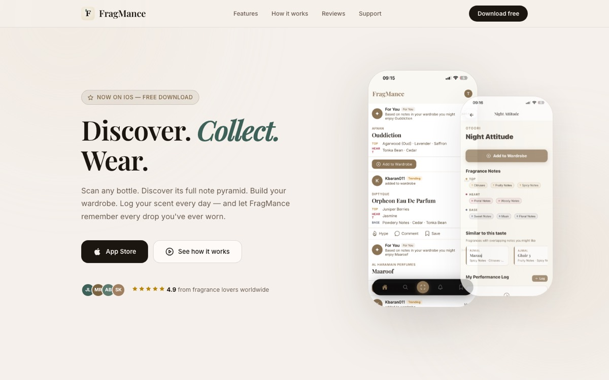

App Store 01FragMance
A mobile fragrance discovery and collection platform, live on the App Store.
Problem
Fragrance enthusiasts track their collections across scattered notes and spreadsheets, with no single place to identify a bottle, log what they wear, or see what friends are wearing.
Build
A React Native + Expo app on a Node.js / PostgreSQL backend, built over a database of 70,000+ fragrances with full note pyramids. The hardest piece was a 4-stage barcode scanning pipeline that reliably resolves a physical bottle to the right entry.
Status
Live on the App Store, with a digital wardrobe, Scent-of-the-Day logging, and a social feed with friends and streaks. Also ships B2B analytics endpoints designed for fragrance houses.